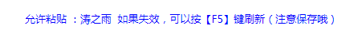

Chaoxing油猴插件辅助脚本
chaoxing网课油猴插件辅助脚本发布（仅供内部测试使用）
功能：
课件

- 翻页限制时间改为1s
- 本人学校时间比1min多了不少。。。
- 一开始还以为网页版不能翻页呢。。。
- 增加三个按钮/文本框
第一页/最后一页/跳转到指定页数，方便继续上一次的学习
- 直接跳到最后一页不会影响完成任务。。。但是不如看完增长知识是不是
视频(包括拓展部分视频)

- 解除鼠标移出自动暂停
- 方便做笔记
- 允许倍速播放
- 方便刷课
- 允许拖拽视频
- 方便快速回到上一次学习的位置
测试允许粘贴

多处重复的可以快速答完
安装及使用方法：
安装油猴插件（tampermonkey）。
网上可以搜到，如果还是不会可以参考【这里】
如下图，搜集了现在各常见的浏览器安装插件的链接&是否支持之类的消息。

墙裂推荐Chrome，谷歌原生的浏览器。
添加脚本。
电脑上，安装了插件的浏览器打开下面的链接，输入密码后即可安装完成
链接：http://suo.im/6rAmEV，密码：
fuckcx（区分大小写）
更新。
虽然我几乎不会更新。。。
万一更新了呢是不是。。。。
所以！
添加了自动检查更新的模式，按照您插件的设置（默认是每天）
如果检测到有更新，会自动弹出窗口
您要做的就是点击【更新】就会自动更新成为最新版本。
当然，您也可以查看一下有什么更新内容（为了防止代码被恶意篡改），此版本非开源版。如果需要研究请联系本人。